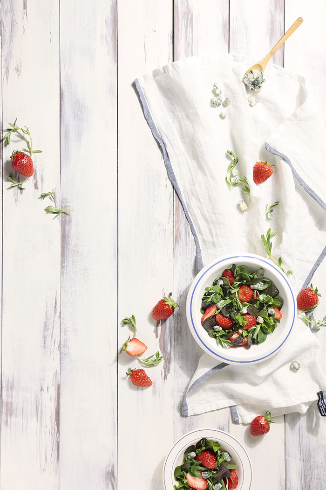

푸드 스타일링, 어떻게 하는 걸까?
/
샐러드
-
우리가 쉽게 접하는 광고나 잡지 등의 음식을 보면
매우 자연스러워 보입니다.
하지만, 그런 사진들 뒤에는 굉장히 정확하고 세밀한 계획이 숨어있습니다.
이번에 보여드릴 사진은 도비라 형식으로 촬영한 샐러드 스타일링입니다.
*도비라: 잡지의 메인 페이지
도비라의 경우, 텍스트가 들어가기 때문에 텍스트의 자리를 계산해서 촬영해야 합니다.
제 사진의 경우는 왼쪽 빈 공간에 세로 텍스트가 들어갈 것을 염두에 두고 촬영했습니다.
실제로 잡지사와 촬영을 할 경우에는 이미 텍스트를 어디에 배치할지 나와있습니다.
푸드 스타일리스트는 그 시안에 맞춰 스타일링 계획을 세우면 됩니다.
그러면 먼저, 샐러드를 촬영할 때 푸드 스타일링을 어떻게 하는지 알려드리겠습니다.
-
Salad Styling
- 가장 먼저, 샐러드에 들어갈 재료들을 흐르는 물에 씻어둡니다.
- 큼지막한 채소들로 볼륨감을 잡아줍니다.
- 볼륨감을 잡아주고 나면 잎채소들을 배치해줍니다.
- 곳곳에 포인트가 되는 식재료들을 사이사이에 넣어줍니다.
- 잎채소가 시들었어요! SOS!
잎채소들은 금방 시들시들 해지기 때문에
사용하기 전까지는 물에 담아두는 것이 좋습니다.
*그냥 물보다는 탄산수나 얼음 물일수록 좋습니다.
양상추와 같이 큼지막한 채소들로 먼저 샐러드의 볼륨감을 잡아줘서
어떤 모양의 샐러드가 나올지 예상해 둡니다.
또한, 어떤 부분을 보여줄지 정해놓고 작업하는 것이 좋습니다.
잎채소들을 손, 젓가락, 핀셋 등을 이용해 디테일하지만 자연스럽게 배치해줍니다.
가장 신선하고 예쁜 부분을 보여주는 것이 좋습니다.
하지만, 너무 예쁜 부분을 보여주는 것에 집착하다가
샐러드가 너무 빽빽해지거나 인위적으로 보일 수 있으니 주의하시기 바랍니다.
또한, 잎채소들을 배치할 때 같은 톤으로만 배치하면
밋밋해 보이고 그냥 한 덩어리로 보일 수 있기 때문에
다양한 톤의 잎채소들을 사용하는 것이 좋고,
같은 톤의 채소들이 너무 겹치지 않게 배치하는 것도 중요합니다.
포인트 식재료 예) 과일 등
마찬가지로 인위적이지 않게 자연스럽게 사이사이에 넣어줘야 합니다.
굉장히 어려운 부분 중 하나입니다.
다시 스타일링 하는 것이 좋지만,
어쩔 수 없다면 분무기를 이용해 물을 뿌려줍니다.
위의 사진도 촬영이 지연되어 약간 시들시들해졌습니다;;;;
샐러드 스타일링은 잎채소 때문에 속도! 가 생명입니다.
-
Styling
- 화이트에 블루로 포인트를 준 플레이트
- 패브릭을 자연스럽게 풀어 헤쳐놓습니다.
- 샐러드에 들어간 재료들을 자연스럽게 흩뿌려 놓습니다.
대부분의 샐러드는 가볍기 때문에
어둡고 무거운 텍스처의 플레이트보다는
화이트 톤의 플레이트를 선택한다면 중간은 갑니다.
블루 포인트로 전체적인 분위기를 맞춰주었습니다.
패브릭을 자연스럽게 놓는 것조차 쉽지 않습니다.
요령이 있는 사람은 쉽겠지만
초보자들은 패브릭을 헝클었다 풀었다 이 짓 저 짓을 반복합니다.
중요한 건 자연스러움!입니다.
패브릭은 푸드 스타일링에서 굉장히 많은 역할을 합니다.
음식의 분위기를 표현해주기도 하고 음식을 더 돋보이게 해주기 때문에
푸드스타일리스트들이 수많은 패브릭들을 모으고 있는 걸 볼 수 있습니다.
초보자들의 많은 실수는 사진을 예쁘게 찍고 싶은 욕심에
갑자기 터무니없는 소품들을 배치하는 경우가 많은데,
그런 뜬금없는 소품들을 배치한 음식 사진은 이질적이고 촌스러워 보입니다.
킨포크를 시작으로 자연스러운 게 유행하면서
음식에 들어간 재료들이나 연관이 있는 물품을
러프하게 배치하는 것이 있어 보이게 됐습니다.
물론 자연스럽게 어디에 배치하느냐도 다 계획에 포함됩니다.
너무 많이 흩뿌려 놓아도 안되고 조금 뿌려놓아도 애매합니다.
적당히 어디에 배치하느냐! 매우 중요합니다.
-
Recipe
- 딸기는 흐르는 물에 씻은 후, 꼭지를 떼고 2등분 해서 준비합니다.
- 어린잎 채소는 가볍게 씻어 물기를 제거합니다.
- 돌나물은 체에 밭쳐 흐르는 물에 씻은 후, 탈탈 털어 물기를 제거합니다.
- 작은 볼에 올리브유를 제외한 유자 드레싱 재료를 넣고 골고루 섞습니다.
- 골고루 섞은 드레싱에 올리브유를 조금씩 넣어가며 잘 섞어줍니다.
- 그릇에 돌나물과 어린잎 채소를 담습니다.
- 사이사이에 딸기와 리코타 치즈를 올려줍니다.
- 유자 드레싱을 뿌려 마무리합니다.
봄을 닮은 샐러드, 딸기 돌나물 샐러드
재료
딸기 6개, 돌나물 2줌, 어린잎 채소 2줌, 리코타 치즈 2 큰 술
유자 드레싱: 레몬즙 1 큰 술, 유자청 1 큰 술, 소금 1/2 작은 술, 올리브유 2 큰 술
-
오늘 알려드린 샐러드 스타일링 방법으로
다양한 샐러드 스타일링을 해보시길 바랍니다.
더욱 있어 보이는 샐러드가 완성될 겁니다.